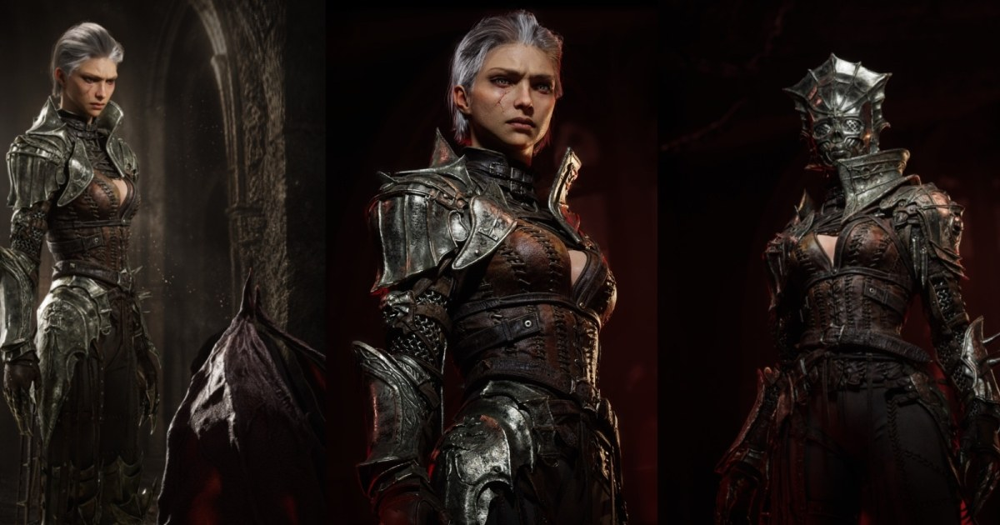

01
《No Mercy》雙角色製作拆解：先鎖定輪廓與低模規劃，再把皮膚、服裝與金屬細節集中到貼圖
Anna Smirnova 的角色案例把高複雜度非對稱設計拆成可迭代流程：早期維持可用的低模基底，材質細節主要透過 ZBrush 烘焙與 Substance 3D Painter 貼圖控制，最後在 Unreal 反覆檢查。

角色製作
★★★★★
完整分析
製作流程
案例先把比例、silhouette 與主要設計決策鎖在 blockout，再逐步打破對稱；部分零件從一開始就以可作低模的拓樸規劃，之後才進入 ZBrush、Maya 與貼圖細化，能降低後段重新拓樸與比例返工的風險。
流程價值
皮膚、服裝與金屬的大量細節直接做進貼圖與 Normal，而不是把所有表面變化都留給程序材質；第二角色也刻意降低細節密度。這種依畫面焦點分配製作成本的做法，對遊戲角色與宣傳級角色資產都具可轉移性。
實測限制
作者以 Path Tracing 做最終呈現，且案例屬個人作品，不代表即時遊戲材質與效能條件。導入時應另測即時光照下的 AO、Normal、皮膚與毛髮表現，並比較『高模先做滿』與『低模基底先成立』兩種流程的實際返工時間。